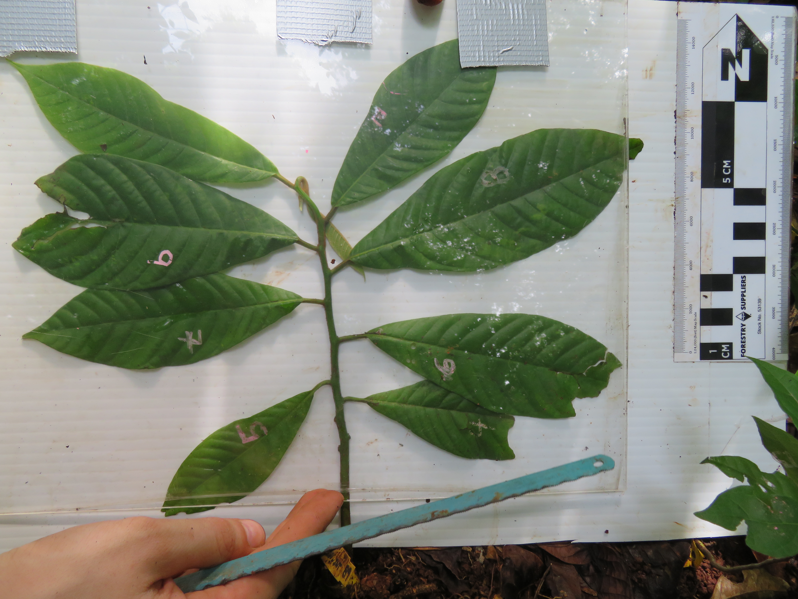
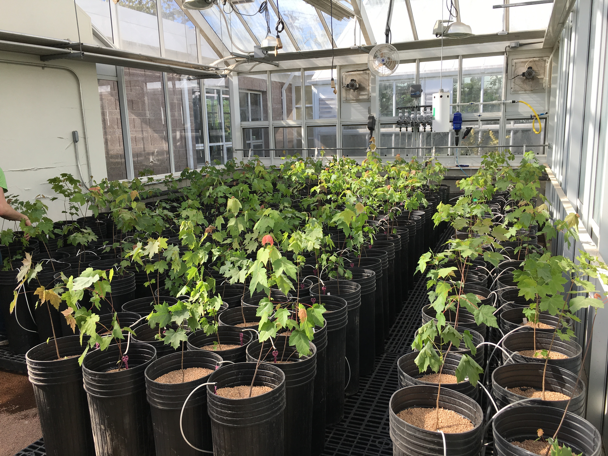

Patterns of herbivory and defense in the tropics
Pests and pathogens exert significant pressure on plant communities, particularly in tropical forests. They are implicated in both the generation of new species via attack-defense mediated evolutionary feedbacks, and in the maintenance of existing species by driving negative density dependence. Plant adaptation to attack represents a major tradeoff with growth, yet is fairly ubiquitous, suggesting its adaptive significance. However, little is known regarding the patterns of vulnerability among and especially within species.
Two chapters from my dissertation aim to improve our understanding of this topic. In the first, I am studying how not only species, but populations of species vary in their vulnerability to herbivory across the Panamanian isthmus, representing a steep rainfall gradient (~1500-3500 mm/year). I am specifically testing whether there is evidence for local adaptation among populations separated by only 10s of kilometers, as might be expected if herbivory were driving diversification among tropical species. With the second, I plan to leverage new methods in chemical spectroscopy to determine whether these same populations actually vary, and to what degree, in their foliar defensive chemistry.
Plasticity in vulnerability to drought
Water or the lack thereof is one of the most fundamental environmental stresses plants must contend with. Their ability to resist water stress is generally adaptive to their specific growing environment, reflecting its historically typical abundance. However, climate-change mediated shifts in temperature and precipitation regimes mean that plants in many regions across the globe are now experiencing novel conditions - they may now receive more or less water than their historical norm. While there has been significant work quantifying the drought resistance of species, and thus the species that we should be more or less worried about, relatively less attention has been given to their ability to adapt within a lifetime. For another dissertation chapter, I am assessing the degree to which common temperate forest species are able to change their drought vulnerability across a single growing season, specifically quantifying the resistance of xylem.
The coexistence of leaf habits and game theory
Drought-deciduousness is a common adaptation to dry conditions across the tropics, where trees will drop their leaves at the onset of the dry season to fuse their hydraulic pathways and avoid drought stress. Similarly, in the wetter tropics evergreen trees are very common, presumably to take advantage of ample year-round precipitation. However, many tropical forests are mixed-deciduous (coxistence of both deciduous and evergreen leaf habits). I believe that mutual competition for water among neighboring trees may be driving the coexistence of these strategies, and am working now to describe these dynamics in the mathematical context of game theory.